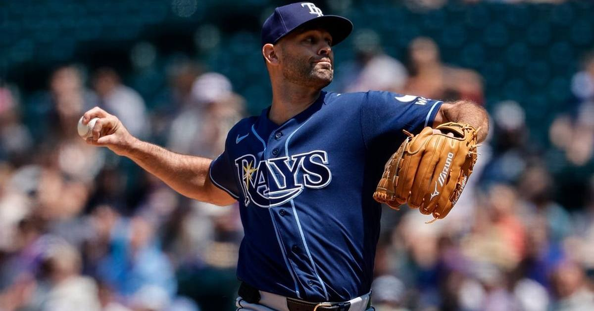

Rays open as -170 favorites over Guardians in ALCS
DraftKings has the top-seeded Rays at -170 to take the pennant after Cleveland's Game 5 shutout set up the best-of-seven ALCS.

Disclosure: this post contains affiliate links. I earn a commission on qualifying purchases.
# Rays open as -170 favorites over Guardians in ALCS
The Guardians earned the hard way into this series. Cleveland's Game 5 shutout on Saturday — sealed by Jose Ramirez's fourth-inning homer — completed the comeback from down 0-2 and set up a best-of-seven ALCS against the top-seeded Tampa Bay Rays.
The matchup
• Series: Best-of-seven American League Championship Series
• Teams: Cleveland Guardians vs. Tampa Bay Rays (top seed)
• How Cleveland got here: 2-0 shutout in Game 5 of the ALDS, finishing an 0-2 series comeback on Ramirez's fourth-inning home run
The odds
DraftKings lists the Rays as -170 favorites to take the pennant, per DraftKings Network. That price reflects the gap in how the two clubs arrived: Tampa Bay cruised in as the AL's top seed while Cleveland had to empty the tank just to get out of the division series.
Watch
Source: "Guardians Set MLB Record With 21 Strikeouts to Complete ALDS Comeback" — APT Sports. The video breaks down Cleveland's 2-0 Game 5 shutout — Gavin Williams' 12 strikeouts, the staff's MLB-record 21 Ks, Ramirez's decisive two-run homer, and Stephen Vogt's postgame comments — the win that sent the Guardians to the ALCS.
Gear up: Fanatics